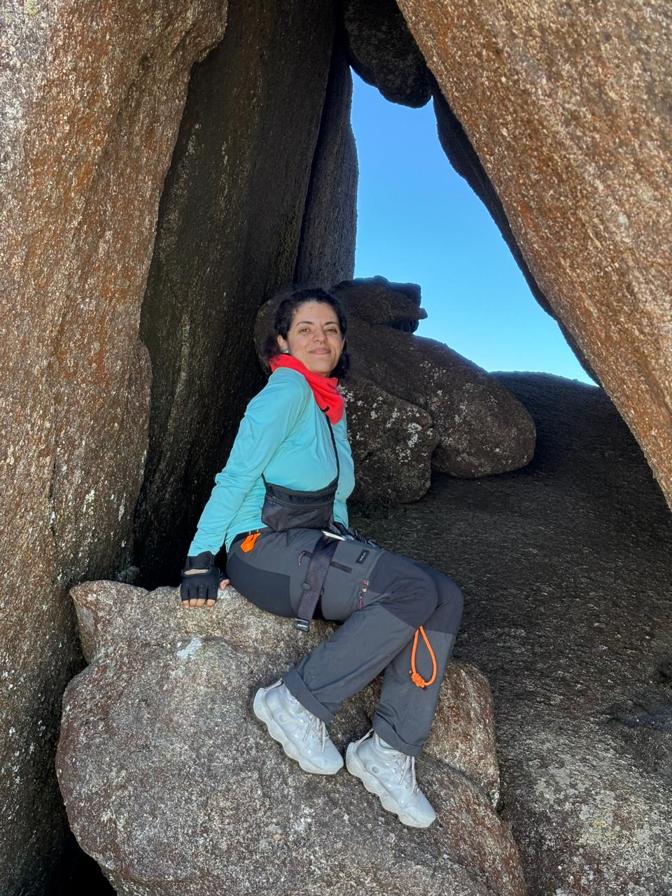
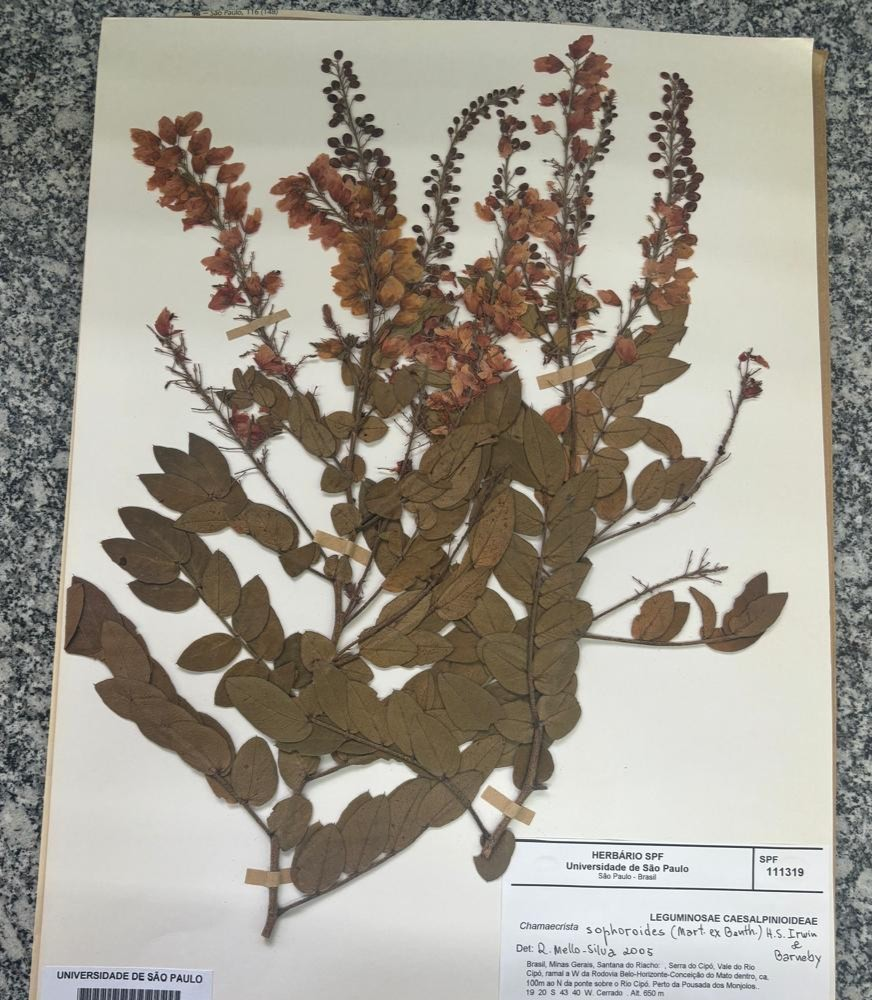
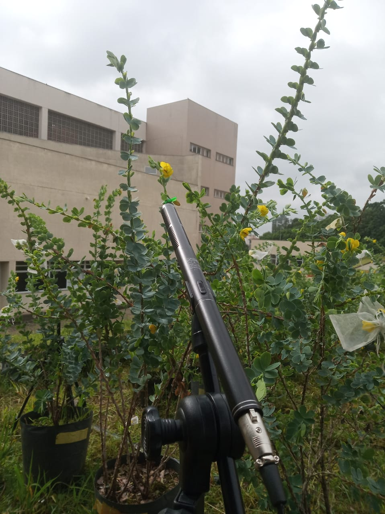
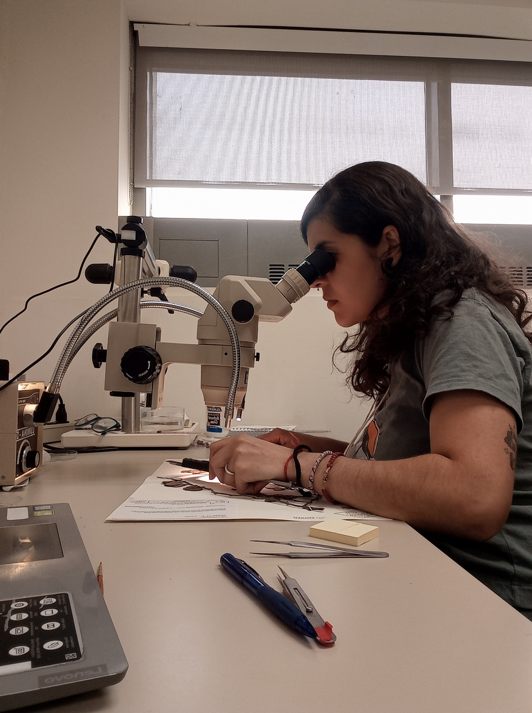

Amanda Vieira da Silva
Doutorado pelo Programa de Evolução e Diversidade — Universidade Federal do ABC (UFABC)
- Ecologia e evolução de mutualismos
- Polinização
- Defesa de plantas por formigas
- Filogenética comparativa
Sobre
Seu projeto investigou as consequências ecológicas e evolutivas do conflito entre o mutualismo de proteção mediado por formigas e o mutualismo de polinização. Usando abordagens meta-analíticas e métodos comparativos filogenéticos, encontrou que o conflito entre formigas e abelhas é mais intenso do que entre formigas e outros polinizadores, deixando um sinal na evolução dos atributos que medeiam os mutualismos de defesa (nectários extraflorais) e de polinização exclusiva por abelhas (anteras poricidas). Também verificou que, em Chamaecrista, não houve modificações florais em resposta à evolução dos nectários extraflorais.
Bacharel em Ciências Biológicas pela Universidade Federal de São Paulo (UNIFESP), mestra em Ecologia, Conservação e Manejo da Vida Silvestre pela Universidade Federal de Minas Gerais (UFMG) e doutora em Evolução e Diversidade pela UFABC (2020–2025), com período sanduíche na University of Michigan. Tem interesse em ecologia e evolução de mutualismos, com foco em polinização e defesa de plantas por formigas. No tempo livre, pode ser encontrada ouvindo Simple Plan, acompanhando o florescimento da planta cadáver (Amorphophallus titanum) ou subindo montanhas.
Trajetória no LIPA
Clique em uma etapa para ver detalhes.
2020–2025 · UFABC
- Orientadora:
- Laura Carolina Leal de Sousa
- Coorientador:
- Anselmo Nogueira
- Período sanduíche:
- University of Michigan (Orientador: Marjorie G. Weber)
- Bolsa:
- FAPESP
- Título:
- O custo da parceria entre plantas e visitantes florais: fatores bióticos e abióticos que regulam os efeitos da exploração em flores.



